| JPivot |
|
| JPivot |
|
ScreenshotsAxis in hierarchical mode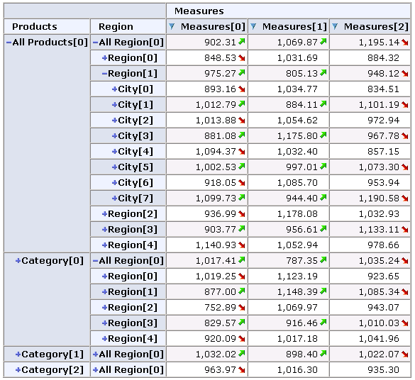Axis showing the parents of the members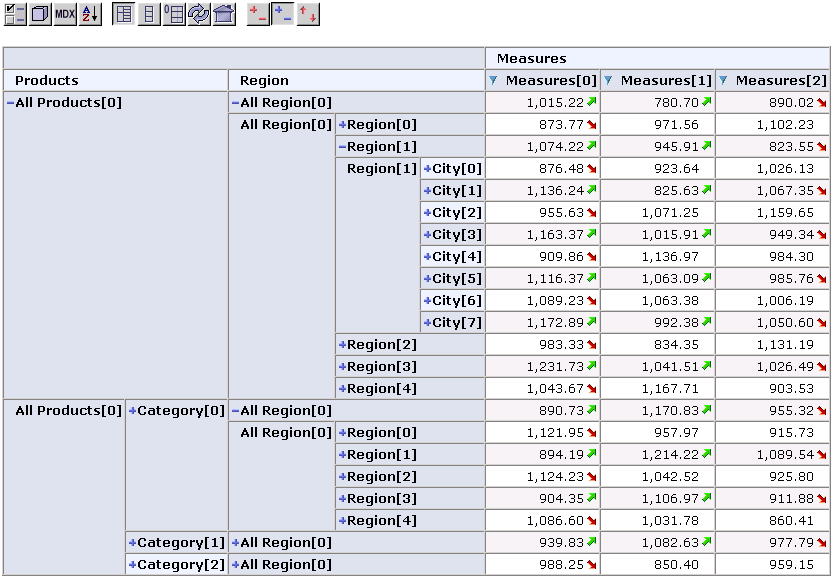Axis in Level ModeThis is useful, when the result ist sorted in break hierarchy mode. 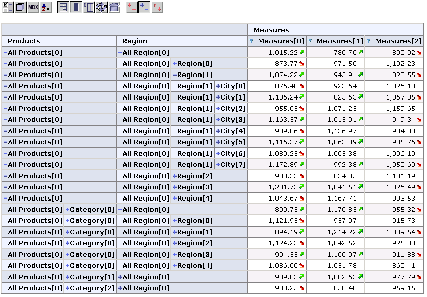Sort options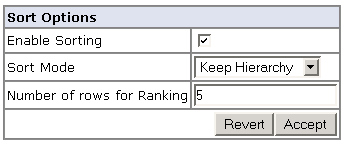Map hierarchies to table axes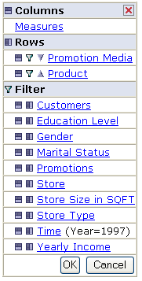Select members from a hierarchy for an axis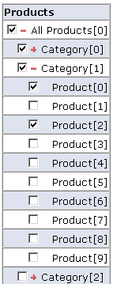Select members from a hierarchy for the slicer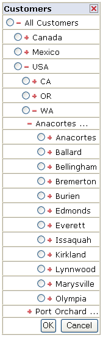Example with Member Properties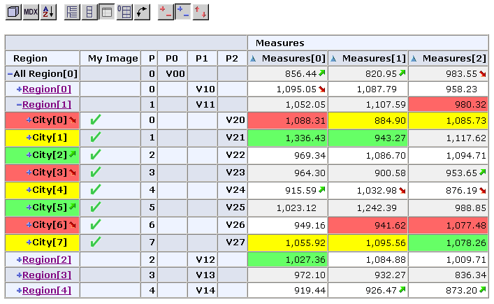Example with Mondrian Foodmart Data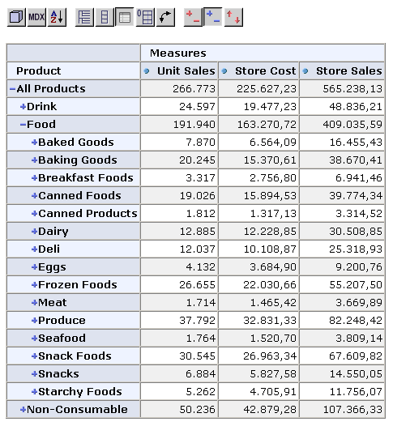Example Chart with Mondrian Foodmart Data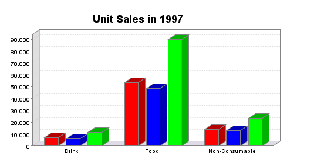Chart Configuration Dialog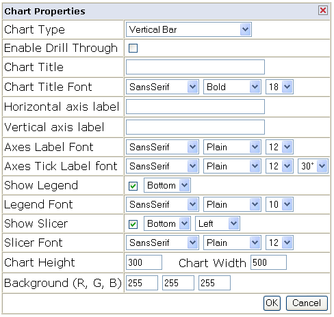MDX Edit Form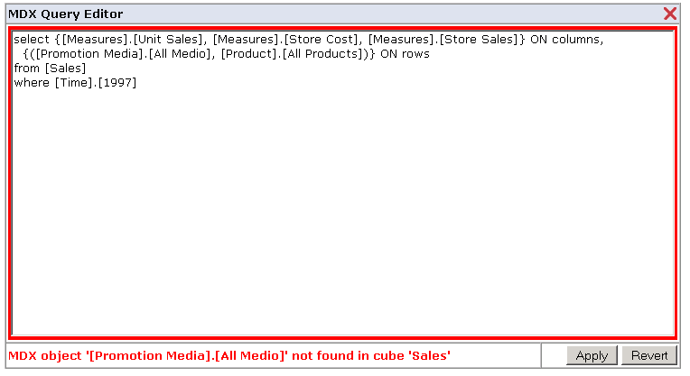 |